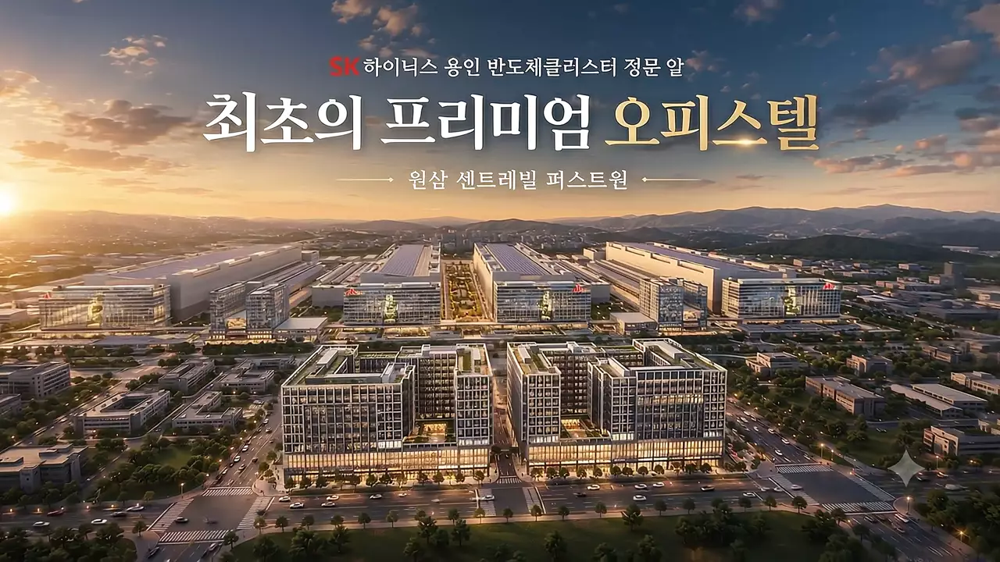
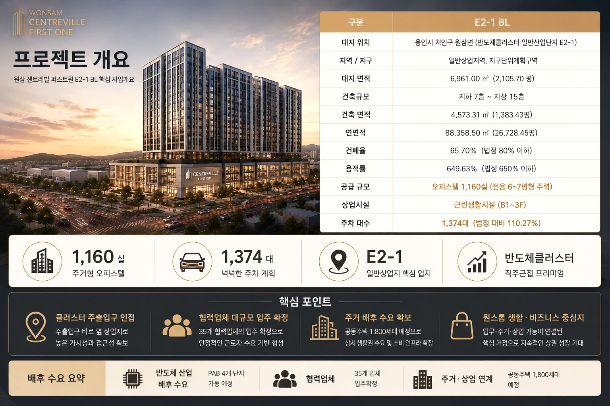

고객 상담 / 고객의향서
가격 · 잔여호실 · 청약일정 · 타입 상담

원삼 센트레빌 퍼스트원(가칭)은 용인 반도체클러스터 일반산업단지 상업시설용지에 들어설 예정인 오피스텔입니다. 사업개요와 타입·평면은 이 사이트에서 보고 분양 절차의 확정 조건은 분양공고 후입니다. 자료 기준일·출처: 사업계획서 발췌와 이 페이지 화면(2026-10-29). 지역 정보는 용인원삼.kr에서 보고 분양 상담은 skwonsam.site와 1833-3872로 이어집니다.
가칭 SK원삼 센트레빌 퍼스트원 E2-1 BL의 위치, 규모, 용도, 주차계획을 한눈에 확인할 수 있는 프로젝트 개요입니다.

| 사업명 | 원삼 센트레빌 퍼스트원 (용인 반도체클러스터 일반산업단지 E2-1·E2-2 신축 오피스텔·근린생활시설) |
|---|---|
| 위치 | 경기도 용인시 처인구 원삼면 죽능리 · 용인 반도체클러스터 일반산업단지 상업시설용지 E2-1·E2-2 |
| 용도 | 오피스텔 · 근린생활시설 (B1~3F 근린생활시설 / 4~15F 오피스텔) |
| 규모 | 각 블록 지하 7층 ~ 지상 15층 |
| 오피스텔 | 소형 오피스텔 타입 구성 예정(A~F 예정) — 상세 면적·호실은 분양공고 후 확정 |
| 근린생활시설 | 블록당 162호 — 면적은 분양공고 후 안내 |
| 대지·분양면적 | 규모는 분양공고 후 안내 |
| 주차 | 블록당 1,374대 (법정 대비 약 110%, 계획 기준) |
| 전용률 | 34.23% 기준 |
| 시행 | ㈜대흥도시개발 |
| 시공 · 입주 예정 | 확정 후 공개 — 상담 시 최신 자료 기준 안내 |
| 분양 조건 | 상세 조건은 분양공고 후 확정 |
타입 구성 예정 안내는 호실타입 페이지에서 확인하실 수 있으며, 상세 면적·호실은 분양공고 후 확정됩니다.
일반 관심고객은 가격·잔여호실·청약 일정 상담을, 기업 담당자는 현장검토자료와 의향서·자료요청을 통해 별도 상담을 받을 수 있습니다.
가격 · 잔여호실 · 청약일정 · 타입 상담
기업숙소 · 임직원 체류 · 자료 검토
상가 입점 · MD 검토 · 업종 상담
분양공고 전 단계입니다. 상세 조건은 분양공고 후 확정되며, 지금은 전화 상담으로 먼저 안내해 드립니다.
용인 반도체클러스터 일반산업단지 상업시설용지에 계획된 센트레빌 브랜드 오피스텔(가칭)입니다. 상세 규모는 분양공고 후 확정됩니다.
분양공고 후 확정됩니다. 공고 전에는 1833-3872 전화 상담과 사전등록으로 소식을 먼저 받아보실 수 있습니다.
사업개요는 이 홈에서 보고 타입과 평면은 호실타입 페이지에서 봅니다. 분양 절차의 확정 조건은 분양공고 후입니다.
지역 정보는 용인원삼.kr에서 보고 분양 상담은 skwonsam.site와 1833-3872로 이어집니다.
현재는 전화 상담(1833-3872)으로 안내하며, 방문 일정은 분양 일정 확정 후 안내합니다.
본 페이지의 정보는 상담 및 자료 안내를 위한 참고 정보입니다.
분양가, 잔여호실, 계약조건, 입주시점 등은 변동될 수 있으므로 상담 시 최신 자료 기준으로 확인해 주시기 바랍니다.
본 페이지는 수익이나 가치 상승을 보장하지 않습니다.
본 페이지의 설계·이미지는 계획안이며, 상세 조건은 분양공고 후 확정됩니다.
본 사이트는 분양 안내를 위한 광고자료입니다.
확인된 자료를 기준으로 안내하며, 과장된 표현보다 정확한 정보를 우선합니다.
모든 분양 정보는 확인된 자료와 현장 확인 내용을 바탕으로 제공하며, 계약 전 세부 조건을 다시 안내드립니다.
고객의 판단에 필요한 정보를 투명하게 제공하고, 장점뿐 아니라 확인이 필요한 사항도 함께 안내합니다.
단기적인 계약보다 정확한 설명과 책임 있는 상담을 우선하는 분양 안내를 지향합니다.
계약 상담부터 계약 진행, 자금 일정, 공사 진행 확인 및 입주 준비까지 고객이 알아야 할 전 과정을 단계별로 안내합니다.
분양조건·사업계획·입지 정보는 변경될 수 있으므로, 최종 계약 전 분양공고·계약 서류와 현장 안내를 반드시 확인해 주시기 바랍니다.